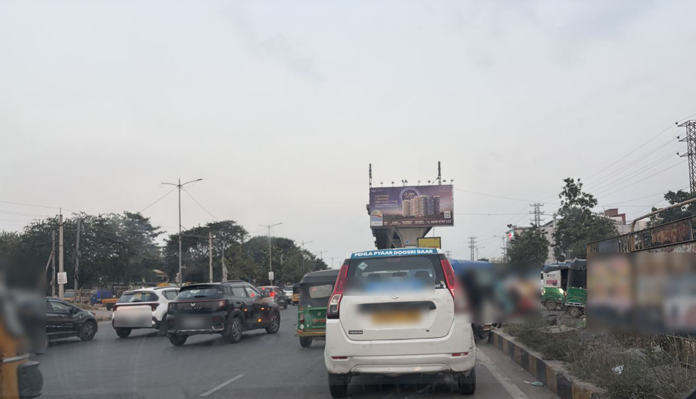
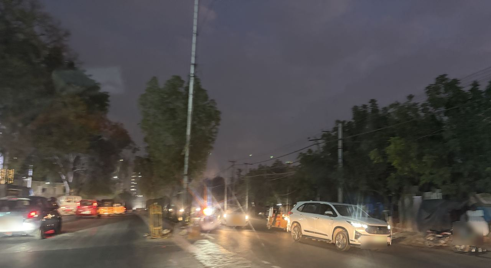
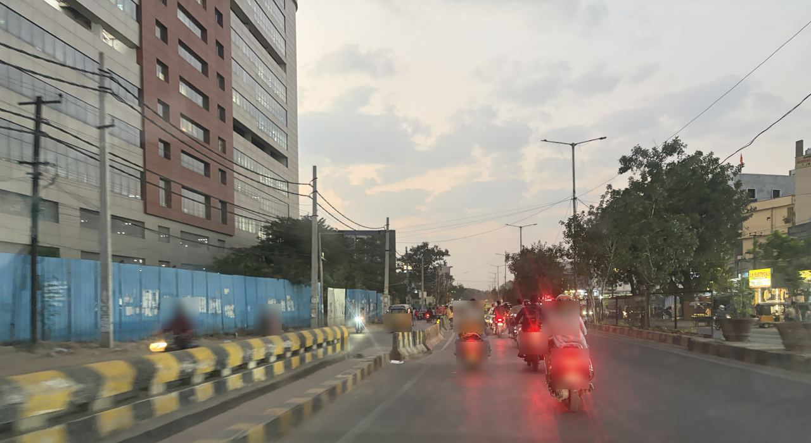

arcroad · Hyderabad · driven November 2026
We drove the detours the map predicted.
All 10 comparable directions matched the model, and none failed. 7 of them were judged under the rules and tolerance fixed before the drive. S08 B → A, S10 A → B and S12 A → B were judged under rules changed after the drive was seen; see the limits below.
Every pass
| Place | Direction | Straight across | Model | Driven | Time | Verdict | Evidence level | Evidence kinds |
|---|---|---|---|---|---|---|---|---|
| T2 | A → B | — | — | 3.08 km | 10.6 min | No model route to compare | Modelled | S · candidate |
| T2 | B → A | — | — | 3.89 km | 13.5 min | No model route to compare | Modelled | S · candidate |
| S16 | B → A | 19 m | 2.38 km | 2.30 km | 9.0 min | Matched the model | Driven by arcroad | S · candidate |
| S18 | A → B | 13 m | 1.57 km | 1.58 km | 3.2 min | Matched the model | Driven by arcroad | S · candidate |
| S18 | B → A | 13 m | 1.38 km | 1.55 km | 11.5 min | Matched the model | Driven by arcroad | S+P · corroborated |
| S12 | A → B | 17 m | 2.03 km | 1.95 km | 4.1 min | Matched the model | Driven by arcroad | S · candidate |
| S10 | A → B | 17 m | 1.13 km | 1.12 km | 3.2 min | Matched the model | Driven by arcroad | S · candidate |
| S08 | B → A | 13 m | 432 m | 404 m | 1.4 min | Matched the model | Driven by arcroad | S · candidate |
| S12 | B → A | 17 m | 981 m | 920 m | 5.6 min | Matched the model | Driven by arcroad | S · candidate |
| S11 | A → B | 35 m | 1.84 km | 2.17 km | 8.1 min | Matched the model | Driven by arcroad | S · candidate |
Times include waits at signals and U-turn queues. What would this cost you?
Photos from the drives





Photos, not renders. Number plates, faces and phone numbers are blurred; the dashboard is cropped out.
The work behind these numbers
3,290 photos taken on the drives. Each was sorted by software and by hand for day or night, signals, glare and U-turn queues; faces and number plates are blurred before anything is shown; 5 are published on this page. Raw photos stay private.
The drives
13 days of driving: one in late October and 12 in November 2026, including ordinary trips with planned checks along the way.
What it has cost so far
25 Oct to 21 Nov 2026, about one month, paid personally.
- ₹2,700 to ₹4,800: Fuel for the drives (estimate, from the distance above)
- ₹1,768: Domain name, first year with privacy protection (invoice)
- ₹5,333 to ₹5,667: AI subscriptions, arcroad's one-third share (one third of about 16,000 to 17,000 a month)
- ₹667 to ₹1,667: Cloud hosting, storage and scheduled computing, arcroad's one-third share (one third of about 2,000 to 5,000 a month)
- ₹500 to ₹900: Design, video and rendering software, arcroad's one-third share (one third of about 1,500 to 2,700 a month)
- ₹317: Software container tools, arcroad's one-third share (one third of about 950 a month)
- ₹1,667: Electricity, internet and equipment at home, arcroad's one-third share (one third of about 5,000 a month)
- ₹880 to ₹950: Pay-as-you-go API usage: two independent review runs of the results (US$10.52 in total, at 84 to 90 rupees a dollar)
- ₹0: Large one-off computing jobs (covered by free monthly credits)
Subscriptions and home running costs are shared with two other public projects, so arcroad carries one third, the same rule used on those sites. Not yet counted: other subscriptions used in part, tolls, parking, wear on the car, and the time spent.
Self-funded, no sponsors. GPS distances come from the phone's recordings, counting only stretches with readings no more than 15 minutes apart. Where a drive was not fully recorded, the distance is estimated from the positions stored in the photos taken on it, which gives a straight-line minimum. Ordinary trips that were not recorded are not counted, so the real figures are higher. Fuel is an estimate: that distance at 10 to 18 km per litre and the Hyderabad petrol price on the date shown. Routes, start points and times of day are never published. Petrol at ₹116.15 a litre (16 Oct 2026). Updated 23 Nov 2026.
Where one drive slowed down
Measured on the drive.
- Muthangi, Mumbai Highway: 17 min crawling over 1,360 m, about 5 km/h.
- Madeenaguda, Mumbai Highway: 3.1 min crawling over 222 m, about 4 km/h.
- RC Puram, Mumbai Highway: 1.8 min crawling over 182 m, about 6 km/h.
One drive, so each figure is a single reading. Crawling means under about 9 km/h for 45 seconds or more. We do not yet say what causes these delays: our automatic photo checks were not reliable enough, so we will measure again at busy times and with hand-checked photos first.
Place codes: S01 to S24 are the 24 places in arcroad's first field sample, drawn at random from the model before any drive (16 the model flagged as long detours, 8 ordinary controls, at least 500 m apart). S23 and S24 are on the Outer Ring Road and have been left out since 8 Nov 2026, because turning round on an expressway needs an interchange by design. T1 and T2 are two named stops on NH-65. A and B are the two sides of the median; A → B means driving from side A to the point straight across on side B.
Rejected passes, places not scored, limits and how this was scored
Evidence kinds
S a timed drive, P a usable photo at the place during the pass, R a repeat pass in the same direction. One kind is a candidate, two corroborated, three with a photo or an official record triangulated.
Outside scope since 8 Nov 2026
- S23 B → A: driven 11.34 km against a model of —; motorway (Outer Ring Road), not counted.
- S24 A → B: driven 1.77 km against a model of 1.55 km; motorway (Outer Ring Road), not counted.
- S24 B → A: driven 11.60 km against a model of 10.49 km; motorway (Outer Ring Road), not counted.
Rejected passes
- S17 B → A: driven shorter than the straight line: not a crossing
- S06 A → B: driven shorter than the straight line: not a crossing
- S11 A → B: gaps in the recording
- S12 B → A: gaps in the recording
Visited but not scored
- S01: reached within 4 m of one side and 15 m of the other; the gate needs 10 m on both, so no pass is counted
- S04: reached within 5 m of one side and 15 m of the other; no pass counted
- S11: visited (geotagged photos) while the GPS recording was stopped; no measured pass
- S14: visited (geotagged photos) while the GPS recording was stopped; no measured pass
- S12: not reached
- S01: passed along the road only, no U-turn: no crossing to score
- S11: passed along the road only, no U-turn: no crossing to score
- S04: only side A visited
- S11: passed along the road only, no U-turn: no crossing to score
- S09: passed along the road only, no U-turn: no crossing to score
- S07: passed along the road only, no U-turn: no crossing to score
- S06: passed along the road only; place held back for a geometry review
- S01: passed along the road only, no U-turn: no crossing to score
- S04: passed along the road only, no U-turn: no crossing to score
- S01: passed along the road only, no U-turn: no crossing to score
- S06: passed along the road only; place held back for a geometry review
- S11: passed along the road only, no U-turn: no crossing to score
- S14: passed along the road only, no U-turn: no crossing to score
- S15: passed along the road only, no U-turn: no crossing to score
- S03: passed along the road only, no U-turn: no crossing to score
- S04: passed along the road only, no U-turn: no crossing to score
- S06: passed along the road only; place held back for a geometry review
- S11: passed along the road only, no U-turn: no crossing to score
- S13: passed along the road only, no U-turn: no crossing to score
- S12: only side A visited
- S01: U-turn made, but the phone logger disconnected several times around it (driver's report): no complete track to score
- S05: not reached on this drive
- S07: U-turn found closed (driver's observation, not timed); the map still shows it open, so the modelled detour may be too short. Flagged for a map check
- S09: U-turn found closed (driver's observation, not timed); the map still shows it open, so the modelled detour may be too short. Flagged for a map check
- S13: U-turn made, but the recording stopped before it (driver's report): no track to score
- S11: A to B tried several times: each run either passed one end just outside the 10 m reach or the recording stopped before B; not scored
Limits
- One day, one driver, one car. A single pass per direction is a candidate under the triangulation rule until repeated or photographed.
- Phone GPS at 1 Hz; distances carry roughly ±50 m of noise on a 1-3 km loop.
- S23 and S24 lie on the Outer Ring Road, an access-controlled expressway: turning round there by design needs an interchange or service road. Since 8 Nov 2026 both are left out of every count under the road-class rule (docs/PREREG-road-class-rule.md); their passes are listed separately for the record.
- Times include waits at signals and U-turn queues; busier times will differ.
- Raw tracks and photos are private; only these per-pass summaries are published.
- Night drive; times at night are shorter than at peak hours.
- S12 counts only under a pairing rule changed on 2 Nov 2026 after this drive was seen: pair the last stay that reaches A with the next stay that reaches B, skipping stays that reach neither. Re-applied to every drive on file, it changed this pass alone (from not driven to matched) and removed nothing.
- Photos from this drive are private and were not used as evidence here; they show vehicles and number plates.
- Night drive; times at night are shorter than at peak hours.
- S10 and S08 count only under the loop rule, written on 3 Nov 2026 after this drive was seen (docs/PREREG-loop-rule.md). At these places the two sides are 13-17 m apart, too close for phone GPS to tell them apart, so the side a loop started on is read from the direction of travel. Re-applied to that drive, it agreed with the published S12 result and changed nothing.
- Photos from this drive are private and were not used in scoring.
- The S12 pass ran nearer peak traffic than the earlier night drives.
- Scored under rules fixed before this drive was seen (the 2 Nov pairing rule and the 3 Nov loop rule); no rule was changed for it.
- S12 has now been driven once in each direction, on different days. Each direction is a different route, so each stays a single measurement: candidate. A repeat (R) counts only in the same direction, under the rule amended on 5 Nov 2026 (docs/PREREG-repeat-rule.md), which was re-applied to every drive on file and changed only the two S12 rows.
- Photos from this drive are private and were not used in scoring; none was taken during the S12 pass.
- Drive at peak traffic. It made no U-turn at any of the 24 sample places, so it adds no scored pass; the detour taken on that drive was elsewhere.
- Daytime drive. The phone logger disconnected several times; nothing outside the recorded track is scored, even where the driver made the U-turn (S01, S13).
- S11 has now been driven once, A to B. A second drive on another day in the same direction would make it a repeat (R).
- S07 and S09: closed U-turns are reported by the driver, not measured. They are not counted as results; they are queued for a map check and a photo check.
- Phone GPS at 1 Hz; fixes worse than 20 m were dropped before scoring.
- Scored under rules fixed before this drive was seen (the 2 Nov pairing rule and the 3 Nov loop rule); no rule was changed for it. S13 A to B is read by the loop rule, because its two points are 12.5 m apart.
- S11 A to B and S12 B to A were driven but the recording has a 23 second gap inside each pass, over the 15 second limit, so neither is counted. S11 A to B is to be driven again.
- Photos were taken on this drive but are not scored as evidence here: the photo rule (P) was not applied to them.
- Recorded in several files. Fixes worse than 20 m were dropped before scoring.
- S11 B to A is read by the loop rule (A and B are 35.1 m apart). The loop closes on the last fix of one file; the day's files are joined before scoring, as on every field day, and the next file confirms the car did not come closer. The turnaround was made at a public junction (driver's confirmation).
- A shortcut through a fuel station forecourt near S11 was also recorded. It is not a public road, so it is not scored; it is kept as a field observation.
How this was scored
The match tolerance was written before the first drive and has never changed. Four rules were added or changed after a drive had been seen (pairing, 2 Nov; loops, 3 Nov; repeats, 5 Nov; road class, 8 Nov, which leaves motorways out). Each is dated under Limits and was re-applied to every drive on file, and every pass that counts only because of one is marked. A drive matches when it is within the larger of 150 m or 25% of the model's distance. Raw recordings stay private; only these per-pass numbers are published.
Open on your phone
 Point your phone camera at the code.
Point your phone camera at the code.